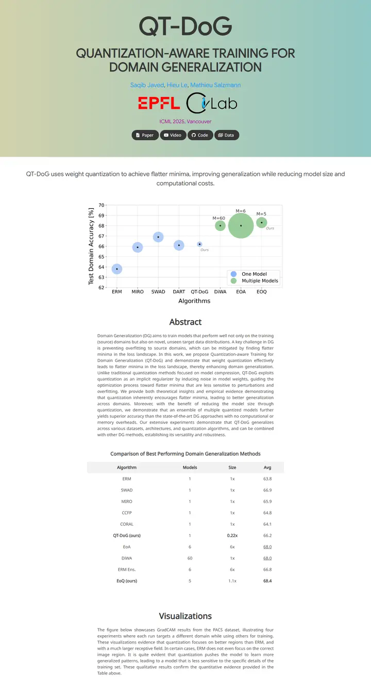

QT-DoG: Quantization-aware Training for Domain Generalization
一块实验室招牌，卡其色渐变到海玻璃色的底上压着巨大的字标，下面是一行行干净的数字。

已对照实际渲染的页面核对。
入选理由
卡其色到青绿色的渐变页头，配大号展示字体标题和实验室 logo。气泡图预告图很干净，随后是一张排版得当、关键行加粗的对比表。定量结果呈现得井井有条。
下面的说明和 DESIGN.md 正文是英文。为了让编程 agent 读同一个版本，这部分没有翻译。
概述
配色
字体
Google Sans
QT-DoG: Quantization-aware Training for Domain Generalization
Abstract · Method · Results · BibTeX — 0123456789
Noto Sans
QT-DoG: Quantization-aware Training for Domain Generalization
Abstract · Method · Results · BibTeX — 0123456789
间距与形状
页面模块
使用建议
相似风格

Scaling Text-Rich Image Understanding via Code-Guided Synthetic Multimodal Data Generation
一本大学出版社的目录册，小型大写衬线标题、色轮般排开的样本，还有一张大地色调的柱状图。

DICE-BENCH: Evaluating the Tool-Use Capabilities of Large Language Models in Multi-Round, Multi-Party Dialogues
一张套着桌游盒封面的 Nerfies 页面，炭灰色骰子横幅打下身份印记，粉彩品牌色胶囊按钮和灰色轮播条把你带进安静的双栏方法解读。

TUNA: Comprehensive Fine-grained Temporal Understanding Evaluation on Dense Dynamic Videos
一个先亮记分牌的 benchmark，带鱼形标志的小型大写字标、渐变色会议名一行，然后是灰色表头、斑马纹行和蓝色模型链接的通栏排行榜。

Gesturing Toward Abstraction: Multimodal Convention Formation in Collaborative Physical Tasks
印在干净纸上的研讨课讲义，大号柔和标题，六个炭灰色标签，一条青绿与洋红的连环画，画着双手在讲解积木。

Making Multimodal LLMs Reliable Chart Data Extractors: A Benchmark and Training Framework
翻到最得意一页的实验笔记本，视频像装在显示器边框里，标题里有 emoji，每张图都带着柔和阴影钉在页上。

What If Moderation Didn't Mean Suppression? A Case for Personalized Content Transformation
一间安静的阅览室，讲台上搭着紫色缎带，石板灰的无衬线标题，Garamond 正文，墙上钉着一张暖琥珀色的便条。